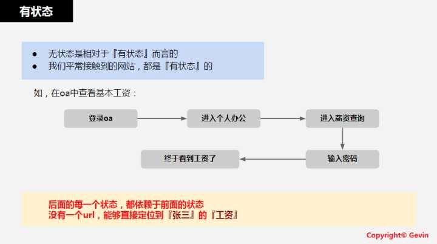
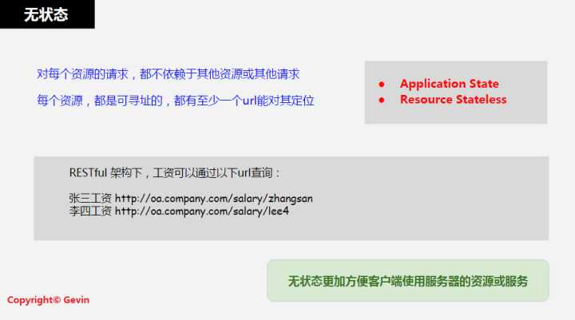

RESTful API简介
服务器后台设计API接口时，目前最流行的风格（原则/标准/规范）就是RESTful，往往简称为REST。
其中 REST=REpresentational State Transfer
REST直译：表现层状态转移REST核心含义：无状态的资源- 资源的变化（CURD）都是通过操作去实现的
- 资源可以用 URI 表示
- 用不同的URI和方法，表示对资源的不同操作
- 典型的：
GET：获取资源POST：新建资源PUT：更新资源DELETE：删除资源
- 典型的：
- 资源的变化（CURD）都是通过操作去实现的
REST接口设计的特点/要求
- 接口形式统一=Uniform Interface
- 无状态=Stateless
- 可缓存=Cacheable
- 客户端服务器架构=Client-Server
- 分层设计=Layered System
- [可选]按需执行=COD(Code on Demand)
RESTful的通俗理解
借用某人的总结：
- 看
url就知道要什么 - 看
http method就知道干什么 - 看
http status code就知道结果如何
其他类型的接口设计风格(含RESTful)
ROA=Resource Oriented ArchitectureRPC=Remote Procedure CallSOA=Simple Object Access ProtocolREST=REpresentational State Transfer
关于无状态的解释
有状态

无状态
